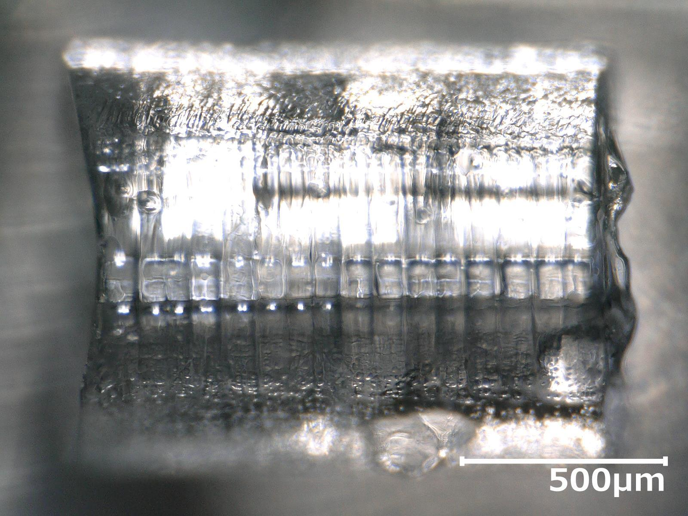
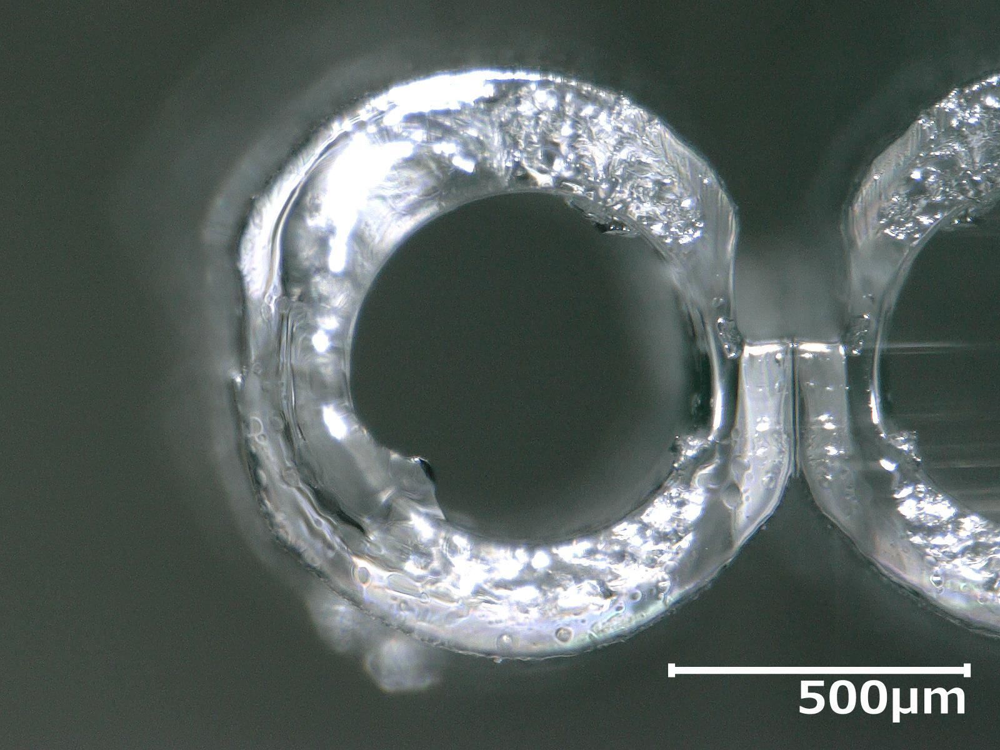
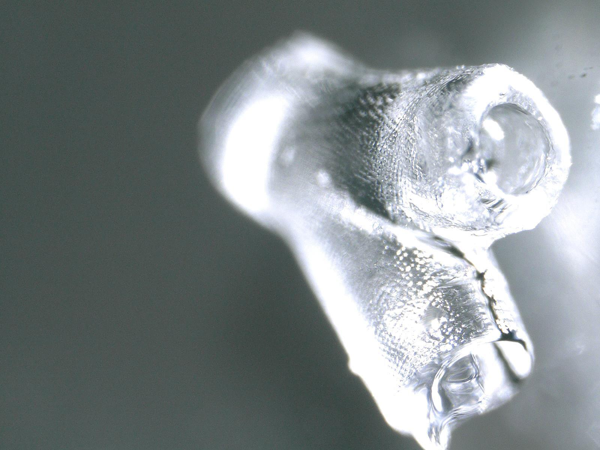

Research
Yuki Kamiya is interested in the field of tissue engineering and has developed a novel method for fabricating tubular hydrogel structures within a channel. This method is designed for applications in vascular cell scaffolds. By utilizing the meniscus effect, the photocurable hydrogel solution along the inner wall of the channel is cured into a ring-like shape. Tubular structures are then created by moving the interface of two liquids and sequentially fabricating these hydrogel rings. This approach holds potential for creating complex tubular geometries, including branching and curved structures, by employing channels shaped to these geometries.
YouTube
Results
Straight tubular hydrogel structure
 
Branching tubular hydrogel structure
